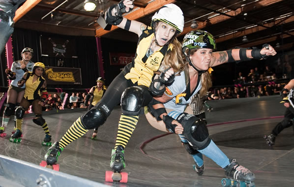

- Tags : Contact, Reformation, Explosivité
- Prérequis : 3 Mètres de track
- Level : 3/5
- Blocker : Travailler le contact et la reformation
- Jammer: Travailler le contact et l’esquive
Préparation
3 blockers en ligne sur la ligne de pivot. 1 jammer en dehors du track au même niveau que les blockers
Déroulement
- Au top le jammer cours sur l’extérieur du terrain pour rentrer au niveau de la ligne de jam. Pendant ce temps les blockers se forment afin d’intercepter le jammer.
- Le jammer doit rentrer au contact des blockers adverse rapidement, afin de les forcer à se reformer le plus vite possible.
Variante
- Les joueurs peuvent commencer allongés sur le sol.
- Plusieurs formations sont possible pour les blockers (crevettes, mur etc…)
Points d’attention
- Le jammer doit être explosif, afin de forcer les blockers à la reformation
- Les blockers doivent communiqués afin d’être efficaces
